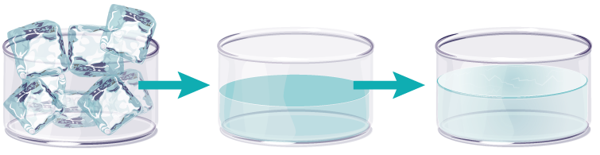

L’eau dans tous ses états
Doré veut faire entrer un glaçon dans un tube à essai pour l'étudier, mais le glaçon est trop gros.
— C'est pourtant aussi de l'eau ! se plaint-il en voyant le tube rempli d'eau de Mifa.
Pourquoi ça ne marche pas avec le glaçon ?
— Faisons des expériences !
— Ouiiii !
Si on fait couler de l'eau dans des récipients de formes variées :
L'eau remplit les récipients et prend leur forme.

— Et s'il n’y a rien pour la recueillir ?

L'eau, comme les autres liquides, peut être transvasée : cela veut dire qu'elle peut passer d'un récipient (comme un vase) à un autre.
— Et c'est beau, un vase avec des fleurs !
Il n'y a que les liquides, qui peuvent faire ça ?
Certains solides, comme le sable, remplissent le récipient presque aussi bien que l'eau.
sable
eau

— Ah oui ! Regarde le sablier qui mesure le temps de cuisson des œufs à la coque : le sable coule dedans comme de l'eau !
C'est vrai. Les grains du sable sont assez petits. Mais si on essaye de faire pareil avec des cailloux ou des glaçons, par exemple, il reste des espaces vides entre eux.
cailloux
glaçons
D'après toi, que se passe-t-il si on met un caillou dans l'eau ?
Clique sur la réponse de ton choix :
Et si on met un glaçon dans de l'eau ?
On voit le glaçon flotter à la surface de l’eau.
Mais… Le glaçon, il disparaît ?!
— Le glaçon n'a pas vraiment disparu : il a fondu. La glace est faite d'eau glacée, qui fond lorsqu'elle se réchauffe.

– En fait la glace c'est de l'eau, mais en dur !
L'eau change d'état selon la température.
Quand l'eau se transforme en glace,
on dit qu'elle devient solide.
– On va expérimenter ! dit Doré en remplissant un récipient avec de l'eau.
– D'abord on va marquer le niveau de l'eau, dit Mifa en dessinant un trait sur le récipient, au niveau de l'eau.
Comme ça on verra si on en a perdu pendant l'expérience !
– On devrait aussi la peser, alors ! dit Doré.
La masse de l'eau dans le bol est de 220 g.
Alors qu'il le met au congélateur, Doré remarque :
– Oh ! quand on penche le récipient, la surface de l'eau se penche dans l'autre sens !
– Tu as raison, répond Mifa.
La surface de l'eau reste toujours horizontale !
Quelques heures plus tard…
– Ouh ! c'est froid ! dit Doré en sortant le bol du congélateur.
– Tu as vu ? s'étonne Mifa. La surface de l'eau n'est plus horizontale, quand tu penches le récipient !
– On dirait qu'il y a plus d'eau ! remarque Doré.
– Ce n'est pas possible, s'énerve Mifa. On va la peser.
– Ça alors ! il y a autant d'eau qu'avant, mais elle grossit quand elle devient de la glace !
Quand l'eau devient solide, elle prend plus de place. On dit que son volume a augmenté.
– Tu te rends compte ? s'écrie Mifa. La glace fond pour devenir de l'eau, et l'eau se solidifie pour devenir de la glace ! 
– Et si on la chauffe ?
demande Doré.

– L'eau est tellement chaude qu'elle fait des bulles, dit Mifa.
– Ça doit être pour ça que ça s'appelle l'ébullition !
– Le niveau de l'eau baisse !
– Oui, on dirait qu'elle part dans l'air. Mais elle est invisible !
Avec la chaleur, l'eau s'évapore.
Elle passe de l'état liquide à l'état gazeux, en se diluant dans l'air.
– Il se passe plein de choses, quand on fait chauffer l'eau, s'écrie Doré en montrant la fenêtre.
Quand la vapeur d'eau entre en contact avec une surface plus froide, elle se condense et redevient liquide.
L’eau peut changer d’état.
glaçon
eau solide
eau du robinet
eau liquide
vapeur d'eau
eau gazeuse
S'il fait très froid, comme dans un congélateur, l'eau se transforme en glace : elle devient solide.
Quand elle sort du robinet (à température moyenne), l'eau est liquide.
Quand on chauffe l'eau, elle se transforme en vapeur : elle devient gazeuse.
Et on retrouve tous ces états de l'eau dans la nature.
Par exemple, la pluie, c'est de l'eau…
La banquise, c'est de l'eau…
Et la neige, c'est de l'eau…
— L’eau a vraiment des supers pouvoirs !
L'eau change d'état selon la température :
elle peut être solide, liquide ou gazeuse.